把微信群、私聊和人工表格里的家教中介流程，转化为可被系统执行的订单、候选、遴选、联系方式权限与退款规则。
传统中介能靠经验把流程跑起来，但当报名、付款、候选、联系方式和退款都散落在群聊与私聊里，就很难稳定复制和管理。
家长需求、教员简历、报名和付款截图存在于不同聊天窗口，缺乏统一业务对象。
谁已付款、谁进入候选、谁被选中、谁该退款，依赖中介人工记录和记忆。
联系方式何时开放、未入选如何退款，若没有清晰规则容易造成骚扰、绕平台与纠纷。
MVP的目标不是一次性做成商业平台，而是先验证：家长—教员—管理员三方能否在线上完整跑通核心撮合闭环。
订单状态、候选关系、被选教员结果、联系方式访问权限、其他教员退款资格与后台运营数据都要同步变化。产品价值不是按钮本身，而是把这些人工判断变成一致的系统规则。
小程序覆盖首页、接单大厅、家长订单、结构化简历、报名状态与联系方式解锁。以下均为本地Demo真实运行截图。
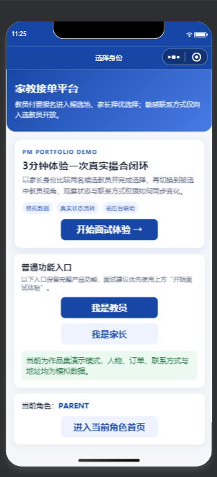
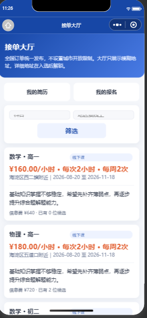
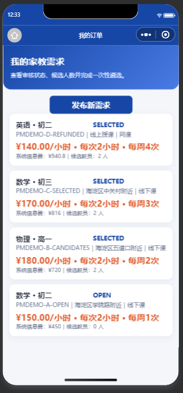
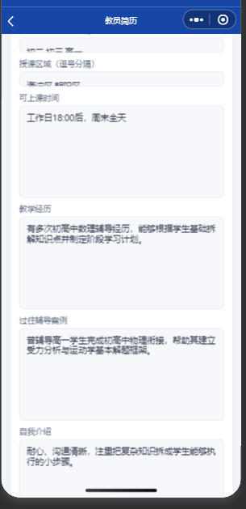
教员完成付款核验后只进入候选池；只有家长最终选中后，平台才向被选教员开放家长微信与详细地址。未入选教员则进入退款路径。
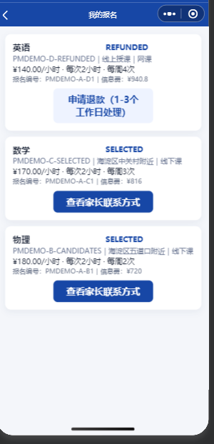
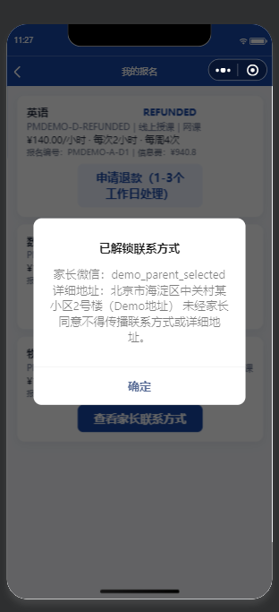
管理后台覆盖数据概览、教员审核、付款核验、退款处理和标准Demo数据，为MVP提供可运营、可验收的后台支撑。
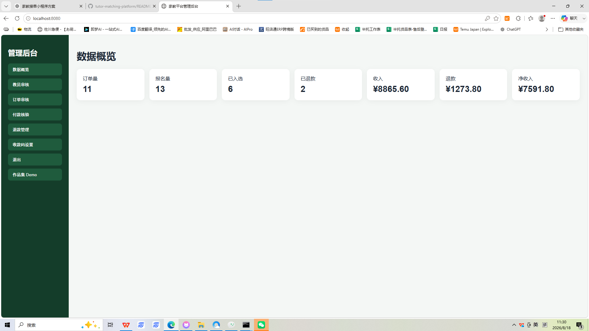
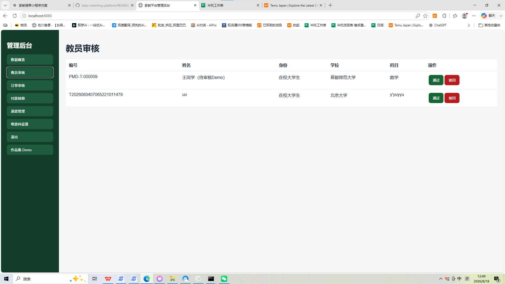
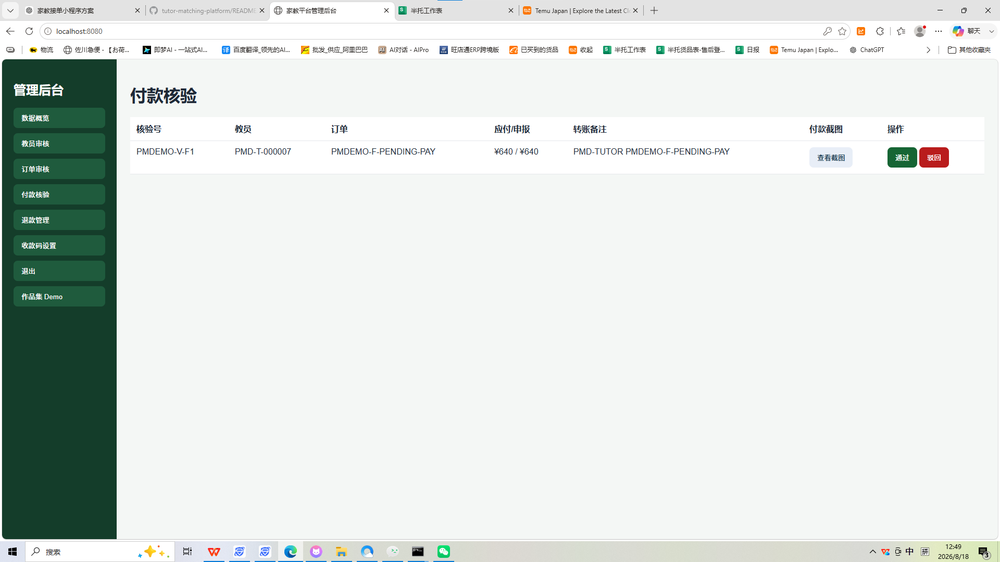
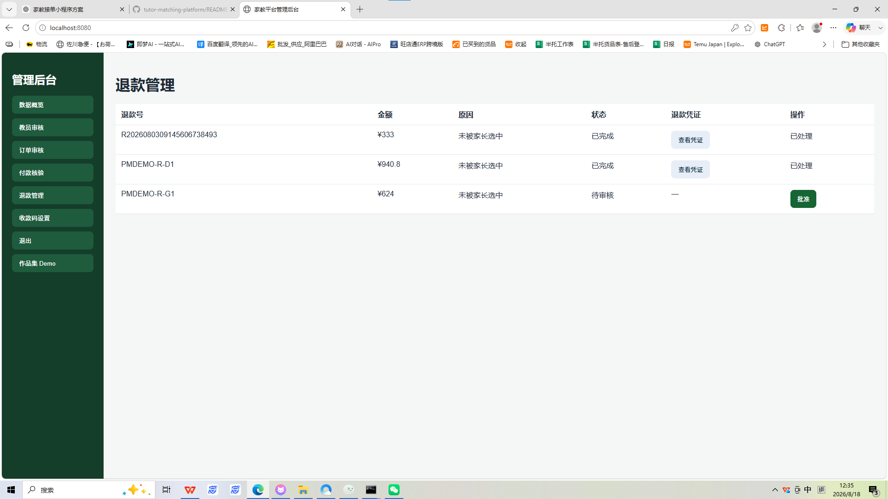
产品首先要验证的是三方撮合能否线上跑通，而不是支付接口本身。
收款码 + 付款截图 + 后台核验可以快速验证用户付费与业务状态流转。
支付、核验、退款等业务节点先被定义清楚，后续再替换为自动支付能力。
一键恢复报名中、多人候选、已遴选、退款完成等典型场景，避免每次演示前重新造数据，也降低演示状态不可控的问题。
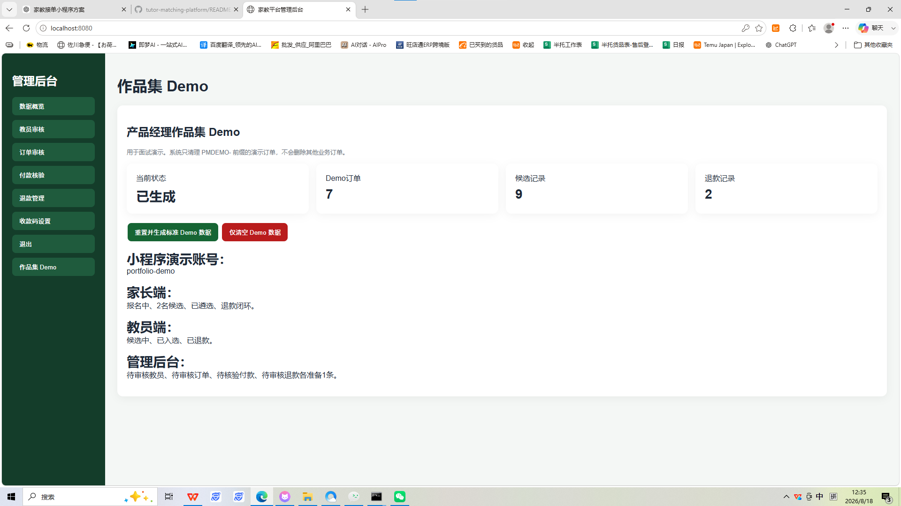
“AI生成 ≠ 直接采用。核心流程必须经过真实运行、状态检查和异常场景验证后才接受。”
订单、用户、候选关系、付款、退款不是孤立页面，而是持续变化的业务对象。
每次状态变化都必须明确谁能看到什么、谁能执行什么操作。
重复点击、未审核、未付款、未入选、退款等失败路径与正向流程同样重要。